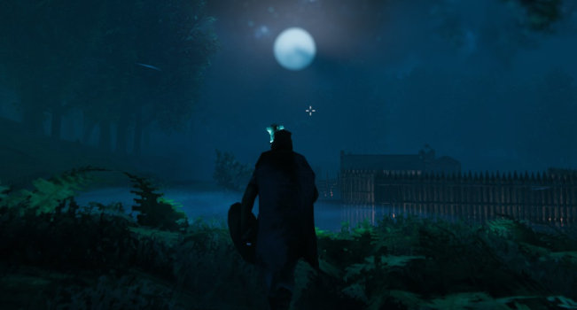
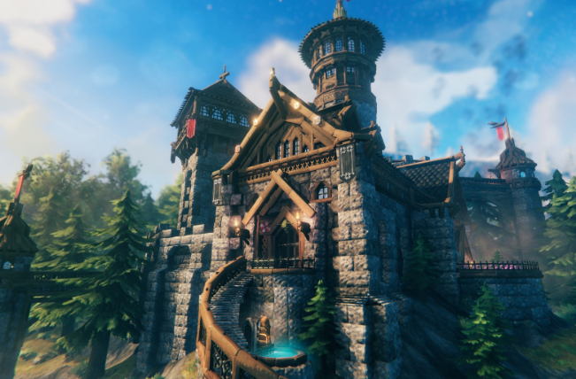
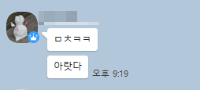

리오넬

발헤임의 플레이어블 캐릭터 중 하나. 플레이어는 넬짱. 주 무기는 활과 망치. 근거리 무기와 방패는 연습중.
파티의 비선실세이자, 스타듀벨리 200시간 이상의 짬밥을 가진 건축과 생활컨텐츠 전문가.
사냥보다는 재료 조달과 지역 장악을 위한 전진기지 건축 등 생존에 있어 필수적인 부분들을 맡는다.
팀원들은 살아남기 위해 리오넬의 말을 거스르지 않는 편.
갑자기 발차기를 해서 집을 부수려고 하는 에시르를 자주 혼낸다.

현재 파티의 최종 목표 거점.

리오넬은 "그래 내가 만들어줄게"라고 공언하였다.